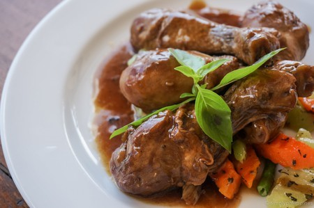

Adobo is one of my favorite food. Specifically, the pork and chicken adobo. This is one of the famous foods in the Philippines. Adobo can also be cook either pork or chicken adobo only. It will depend on what people wants. When I ate pork and chicken adobo, it always reminds me of my back home, the Philippines. Also, my homesickness was lessen when I ate adobo.

Some History
The roots of the Philippines’ most well-known dish are not easy to trace, but we do know a few things about the origins of adobo, and how it’s evolved into the dish Filipinos love today. At its most basic level, adobo is a dish of protein braised in vinegar, and spiced with garlic and black peppercorns. Beyond that there is very little agreement.We know the Malay voyagers who originally landed in the Philippines used vinegar and salt as a way of preserving food, keeping it edible for longer. In the hot tropical climate on the islands, vinegar appears again and again in traditional recipes, dating back to a time before refrigeration. Filipinos were already preparing their protein in a marinade of vinegar and salt before the Chinese traders arrived. Some of the Chinese traders, who ventured all over the region selling their wares, settled in the Philippines. They brought with them a number of ingredients that were quickly adopted by the locals, including ‘pancit’ noodles, and soy sauce. In many parts of the Philippines, soy sauce came to replace the use of salt in home kitchens, and so soy sauce is still considered a key ingredient of a good adobo in most households.